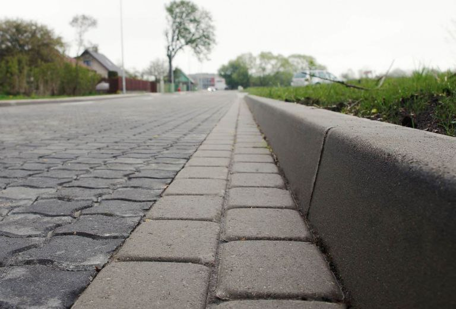

Бортовые камни подбирают под конкретные виды работ. Выделяют несколько основных видов бордюров:
- Дорожный бордюр. Длина составляет 100 сантиметров, высота — 30 сантиметров, ширина колеблется от 15 до 18 сантиметров. Бордюры выдерживают длительное воздействие влагой, им не страшны лучи палящего солнца. Такие элементы устанавливают при строительстве различных типов покрытий.
- Тротуарный бордюр. Он меньше и уже дорожного. Его используют для создания отдельных зон, например, на аллее или в сквере.
- Садовый, декоративный бордюр. Также служит в качестве декоративного элемента. Разделяет территорию на различные зоны. Садовые бордюры производят разных цветов. Благодаря этому можно визуально выделить клумбу в саду или парке.
- Радиальный бордюр. Его используют для скругления углов на клумбах. Декоративные элементы изготавливают в различных оттенках.
- Мостовой бордюр. Имеет размеры от 100х45х18 до 100х60х20 см, используется при больших перепадах высот между покрытиями.
Таким образом, каждый сможет подобрать бордюр по вкусу и кошельку.
Размерный ряд
Параметры бортовых камней подбирают под конкретный вид работ. При укладке дорожного полотна выбирают бордюры длиной 100 сантиметров, высотой — 30 сантиметров. Если бордюр устанавливают в пешеходной зоне, работают с элементами длиной — 50 или 100 сантиметров, высотой — 20 сантиметров. При установке бордюров для клумб можно использовать не только бордюрные камни, но и элементы, изготовленные из натуральных горных пород, пластика, резины и других материалов.
Технология монтажа бордюрного камня
Все работы по укладке бордюров происходят по специальной технологии. Нарушение на одном из этапов может снизить срок эксплуатации бордюрного камня. Необходимо подготовить площадку для работ. На ней должны поместиться не только бортовые камни, но и все необходимые инструменты и транспорт.
Мы работаем со всеми видами бордюров. Благодаря обширному автопарку спецтехники все процессы проходят быстро и качественно.
Ресурсы
Схемы установки бордюра едины и подходят для регионов с любым типом грунта и климата. Для работы с бордюрами понадобятся лопаты, мастерки для укладки бетона, гидро- или лазерные уровни, болгарки для разрезания бетонных элементов, строительная леска для разметки территории. Также необходимо подготовить киянки или столярные молотки, кувалды с резиновыми насадками, с помощью которых можно корректировать местоположение бордюрного камня, закреплять или проводить его усадку. Для транспортировки материалов по площадке понадобится экскаватор-погрузчик.
При установке бордюров потребуется большое количество бетонного раствора. Его можно замешивать вручную. Нужны лопаты и большие емкости, в которых смешивают цемент, песок и воду. Использование бетономешалок в разы ускорит процесс. Рабочим не придется прерываться на то, чтобы приготовить очередную порцию бетона.
Разметка территории
Прежде чем проводить укладку бордюрного камня, необходимо наметить места для его монтажа. Для этого на участке натягивают строительную леску и фиксируют его края деревянными кольями. Леска должна быть хорошо натянута. Если останутся провисания, бордюр может лечь криво. Важно правильно рассчитать высоту лески. Она должна находиться на 3–5 сантиметров выше уровня бордюрного камня.
В зависимости от геологических особенностей территории, рабочие могут проводить установку бордюра параллельно поверхности грунта или под уклоном. Это важно учитывать при разметке участка.
Подготовка траншеи
Следующий этап установки бордюра — подготовка траншеи. Для этого экскаватор выкапывает траншею. Рабочие выполняют доработку вручную. Траншею нужно очистить от камней и мусора. Глубина траншеи будет зависеть от высоты бордюрного камня и толщины слоев основания для монтажа бордюра.
На дно получившейся траншеи рабочие укладывают геотекстиль. Такое синтетическое полотно защищает бордюрный камень от воздействия излишней влаги, предотвращает прорастание корней травы к основанию бордюра, обеспечивает долговечность конструкции в процессе эксплуатации. Для работы необходимо выбирать геосинтетику плотностью не меньше 160 г/см².
На подготовленную поверхность засыпают щебень. По технологии он должен покрывать поверхность не меньше, чем на 10 сантиметров. Сверху засыпают песок. На это основание заливают бетон. Толщина цементно — песчаной подушки не должна быть меньше 10 сантиметров. Важно учесть, что подушка из песка, щебня и бетонной смеси может занимать не меньше 30% глубины траншеи. При нарушении технологии бордюр будет неплотно закреплен в грунте, потеряет устойчивость и может быть выдавлен из траншеи спустя несколько месяцев после установки. Ширина траншеи также зависит от размера бордюрного камня. Для удобства установки бордюра оставляют зазор с каждой стороны по 2–5 сантиметров.
Бетонная смесь
Качество бетонной смеси напрямую влияет на эксплуатационные свойства бордюров. Для монтажа бордюров подойдет бетон марки В15.
Щебень и песок должны быть мелкофракционными. На одну порцию цемента используют 3–4 части песка, или его смеси со щебнем. Воду добавляют порционно. По строительным правилам полученная смесь должна быть однородной, без комков и в меру плотной.
При установке бордюров раствор распределяют порционно по мере укладки. Если залить раствором всю траншею сразу, бетон начнет быстро застывать и может потерять рабочие свойства еще до того, как будут уложены бордюры.
Технология монтажа бордюров
Установку бордюра проводят на свежий бетон. Их монтируют лицевой стороной к дороге. Укладку начинают с края траншеи. Бордюрный камень укладывают в траншею и регулируют положение, подбивая в нужную сторону с помощью молотка с резиновой накладкой или киянки. Использовать кувалду с железной насадкой не рекомендуется. Несмотря на то что элементы выполнены из крепкого бетона, он может повредиться или треснуть от сильного удара. Также не стоит проводить установку бордюра с помощью вибрационных инструментов. Под воздействием волн структура бордюра может нарушиться.
При укладке бордюра нужно учитывать расположение грунтовых вод. Если их уровень высокий, можно выполнить устройство дополнительного слоя щебня. Его насыпают перед песчаным слоем, высотой 8–10 сантиметров. Такая защитная подушка гарантирует, что бордюр не расшатается раньше времени и прослужат положенный срок эксплуатации.
После укладки всех бордюрных камней в пространство между грунтом и бордюром заливают тонкий слой бетона высотой 10 сантиметров, шириной 6–7 сантиметров. Таким образом получается замок, который предотвращает смещение элементов. Швы между бордюрными камнями также заливают цементом. После полного застывания смеси оставшиеся пустоты заполняют щебнем и песком. Финальный слой — грунт. Им засыпают бетонный слой.
Установку бордюра можно упростить и ускорить, использовав специализированную технику. Металлические клещи аккуратно захватывают бордюрный камень и укладывают его в нужное место. Бетон в траншею также можно подавать автоматически.
Если бордюры устанавливают на фигурные клумбы или тротуарные дорожки с крутыми поворотами, бордюр разрезают с помощью болгарки с алмазным кругом. При работе не стоит забывать о технике безопасности. Нужно работать в перчатках и защитных очках или маске. Если повороты на тропинке плавные, разрезать бордюр не понадобится. Образовавшееся пространство заполняют бетоном. Однако делать это стоит не раньше, чем через 24 часа после окончания основного монтажа бордюров. Это нужно, чтобы бордюр принял окончательное положение на бетонной подушке. Если же скрепить их, не дождавшись застывания,бордюрные камни могут застыть с перекосом. Исправить дефекты будет уже невозможно. Придется проводить демонтаж и заново укладывать бордюр. После того как бордюр застыл на цементном основании, щели нужно залить тонким слоем бетона. После этого можно проводить укладку тротуарной плитки или асфальта.
В компании «СК Асфальтирование Рус» мы работаем со всеми типами бордюров. Все используемые в работе материалы покупаем на заводе. При необходимости можем предоставить клиенту паспорта и сертификаты качества.
Быстро рассчитаем оптимальное количество материалов и предварительную стоимость. Оставьте заявку на сайте, тогда мы свяжемся с вами, чтобы выяснить все детали.
Мы даем гарантии на выполненные работы! Сотрудничать с нами комфортно и выгодно!